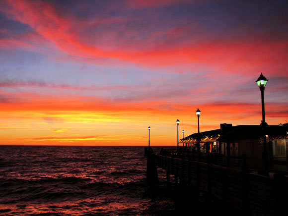

So...About Me
My life is easily compared to songs that I listen to because they tell a story.

I have been moving from house to house since I was 3 years old. My parents have seperated by then. I would go from having a calm and easily going enviroment to a strict and angry enviroment. I never minded because I understood that no matter what They both loved me equally.
Around 7 years later, my mom had been in a relationship and had my baby brother Leonardo. It wasn't easily because his father left us and we had to handle being on our own. He is still growing now and he is very funny.
Now I"m just dedicated to school and work. I still visit my dad in Anaheim and the family friends we have over there. I also just focus on my brother because he doesn't understand that soon I'm not going to be around a much. All I can say is that from here, I don't predict the future.
